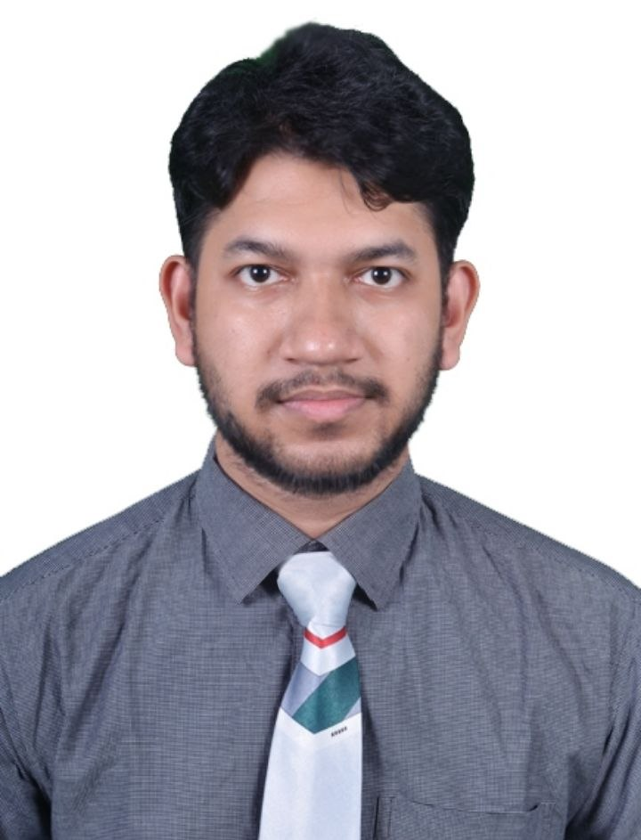

EEE Graduate | RUET | AI & Biomedical Researcher
Recent EEE graduate from Rajshahi University of Engineering and Technology (RUET). Passionate about Machine Learning, Deep Learning, and Biomedical Signal Processing. Active in researching non-invasive diagnostic devices and lightweight neural networks.